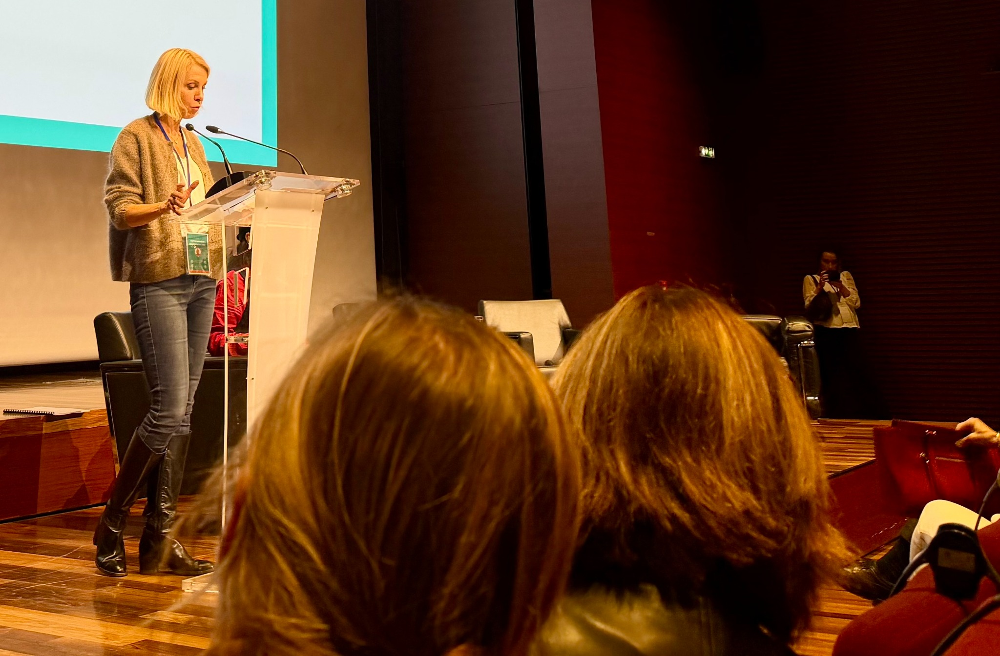

The Conversation
Research · Publications · Knowledge sharing
Opinion pieces • Media • Talks
A non-exhaustive selection of public-facing articles, media contributions and talks that extend my research into professional and societal debates.
Sharing research
Taking ideas beyond academic journals.
Opinion pieces, media contributions and talks translate research findings, contribute to public debate and create dialogue with organizations.

Opinion pieces & media
This selection illustrates the variety of my public-facing contributions and is not intended to be exhaustive.
Facilities
Entreprises : pourquoi grossir ne fait pas grandir, la leçon oubliée de la Loi Parkinson
Read publication ↗Courrier Cadres
Au travail, l’enjeu n’est plus le temps, mais son usage
Read publication ↗Courrier Cadres
Management : pourquoi l’écoute des « voix discordantes » est une ressource précieuse
Read publication ↗Courrier Cadres
Le bureau, cinq ans après le Covid : où en est-on ?
Read publication ↗Facilities
La plasticité organisationnelle : nouveau buzz-word ou vrai concept éclairant ?
Read publication ↗Courrier Cadres
Retour au bureau : vos espaces de travail sont-ils à la hauteur du défi ?
Read publication ↗Harvard Business Review France
Les enjeux du coworking face au télétravail
Read publication ↗Harvard Business Review France
Choisir sa localisation : quels critères pour l’entreprise ?
Read publication ↗Selected talks
A few representative speaking engagements with academic, professional and broader audiences.
Online conference
The “leading by example” in terms of offices
A talk on spatiality, social relations, occupations and performance.
Research seminar
Les espaces de travail : toujours une nécessité pour l’homme et pour l’organisation ?
IAE Paris–Sorbonne Business School – CIME Chair.
EURAM
When an elephant brings informal interactions in a bank
With Jean-Denis Culié, Lisbon.